Каждый файл, который текущий код может отправить на любом языке. Ширина 1280 px без масштабирования: прокрутите вбок, чтобы увидеть правый край. Замеры — scripts/lib/image-quality.mjs. BEFORE/AFTER — before-after.jpg и edges-100.jpg рядом.
1280×720 · полосы 0/0 px · края 100%/128% · детали 0.40 · увеличен из маленького кадра (детали 0.404 < 0.44)
/help (uk en pl) · /help (ru)
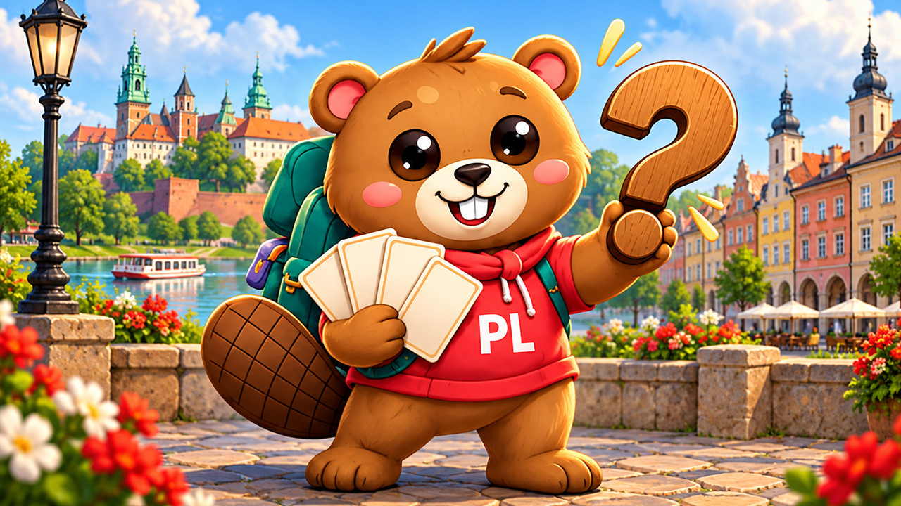
1280×720 · полосы 0/0 px · края 107%/90% · детали 0.57 · без мыльных полос
/lesson (uk en pl)
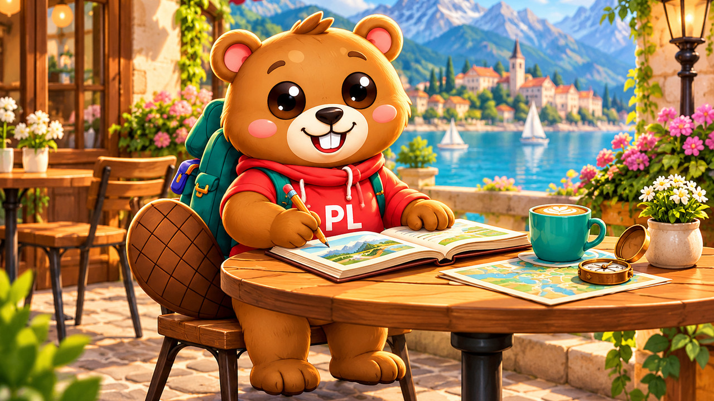
1280×720 · полосы 0/0 px · края 69%/61% · детали 0.56 · без мыльных полос
/map (uk en pl) · /map (ru)
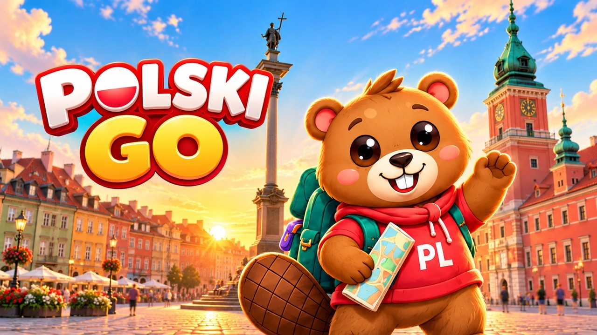
1280×720 · полосы 0/0 px · края 107%/90% · детали 0.57 · без мыльных полос
/quests (uk en pl) · /quests (ru)
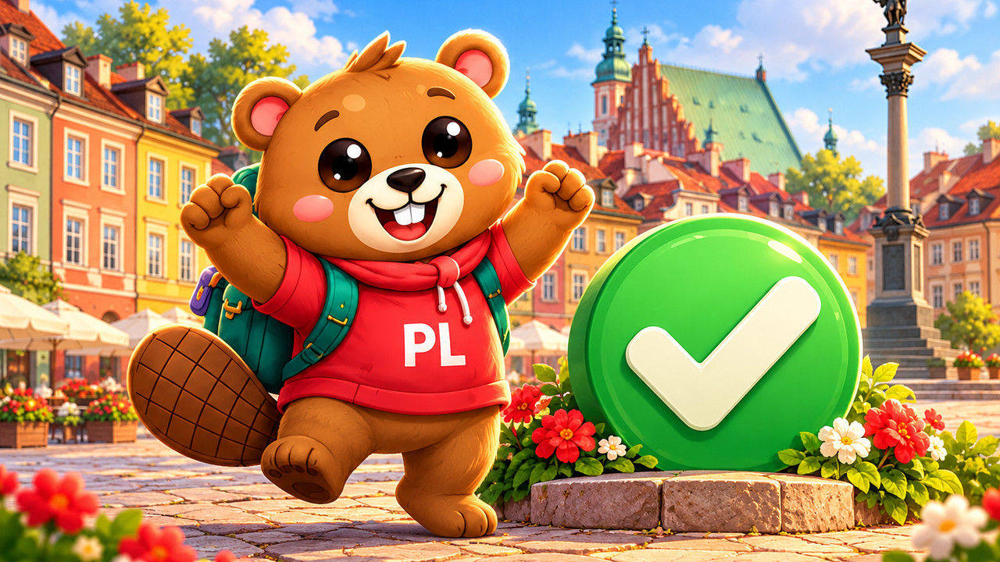
1280×720 · полосы 0/0 px · края 107%/90% · детали 0.57 · без мыльных полос
напоминание «урок» 19:00 (uk en pl) · напоминание «урок» 19:00 (ru) · напоминание «урок» другое время (uk ru en pl)
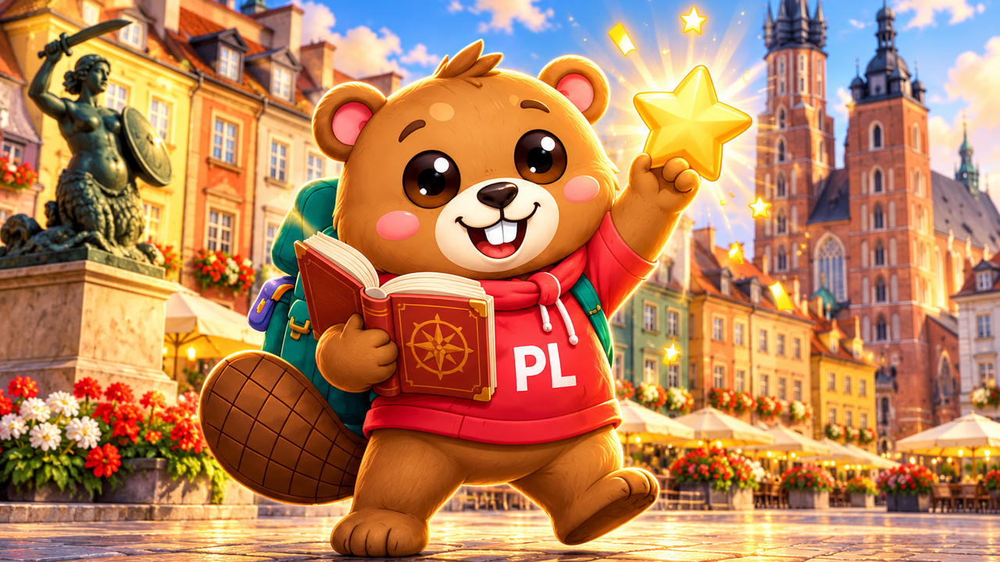
1280×720 · полосы 0/0 px · края 109%/92% · детали 0.57 · без мыльных полос
напоминание «возвращение» (uk ru en pl)
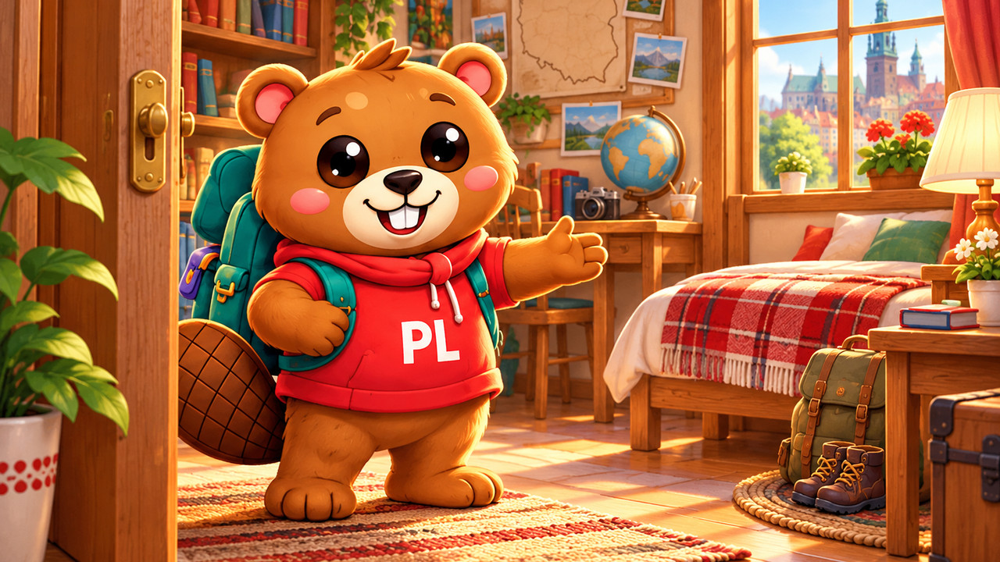
1280×720 · полосы 0/0 px · края 78%/52% · детали 0.58 · без мыльных полос
напоминание «серия» (uk ru en pl)
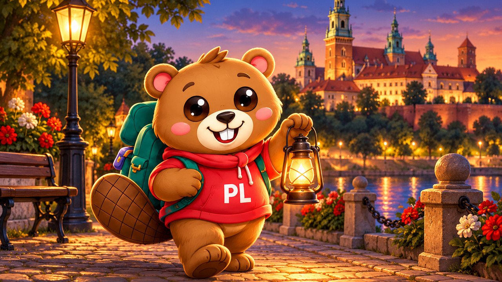
1280×720 · полосы 0/0 px · края 71%/64% · детали 0.54 · без мыльных полос
/settings (uk en pl)
1280×720 · полосы 0/0 px · края 71%/64% · детали 0.54 · без мыльных полос
/start (uk en pl) · /profile (uk ru en pl) · /start (вернулся) (uk en pl)
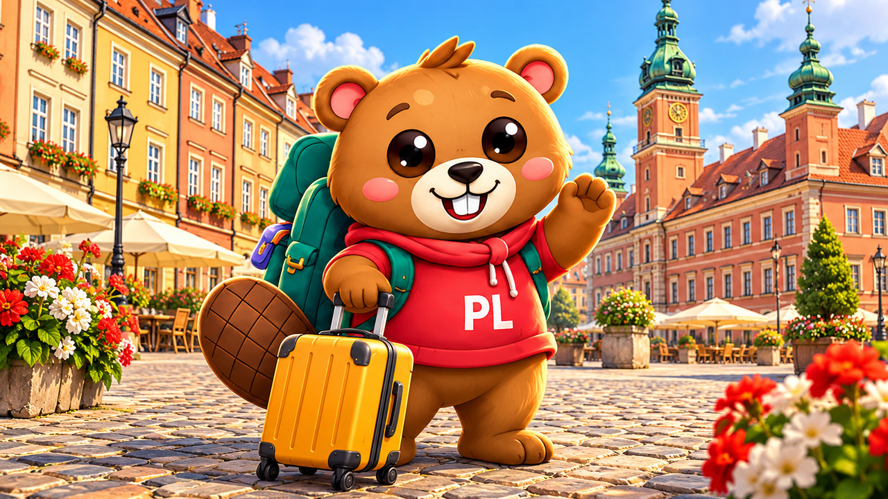
1280×720 · полосы 0/0 px · края 109%/92% · детали 0.57 · без мыльных полос
/stop (uk ru en pl)
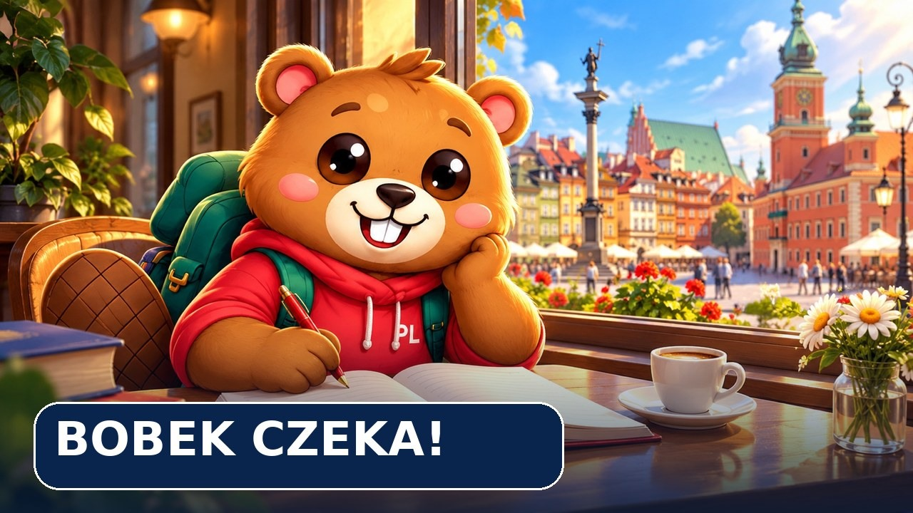
1280×720 · полосы 0/0 px · края 102%/128% · детали 0.55 · без мыльных полос
/words (uk en pl)
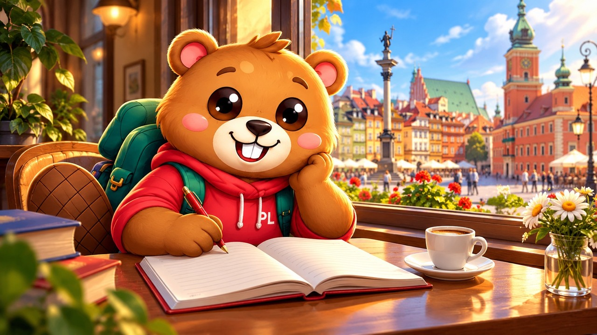
1280×720 · полосы 0/0 px · края 64%/100% · детали 0.52 · без мыльных полос
/quiz food (ru)
1280×720 · полосы 0/0 px · края 81%/122% · детали 0.51 · без мыльных полос
/lesson (ru)
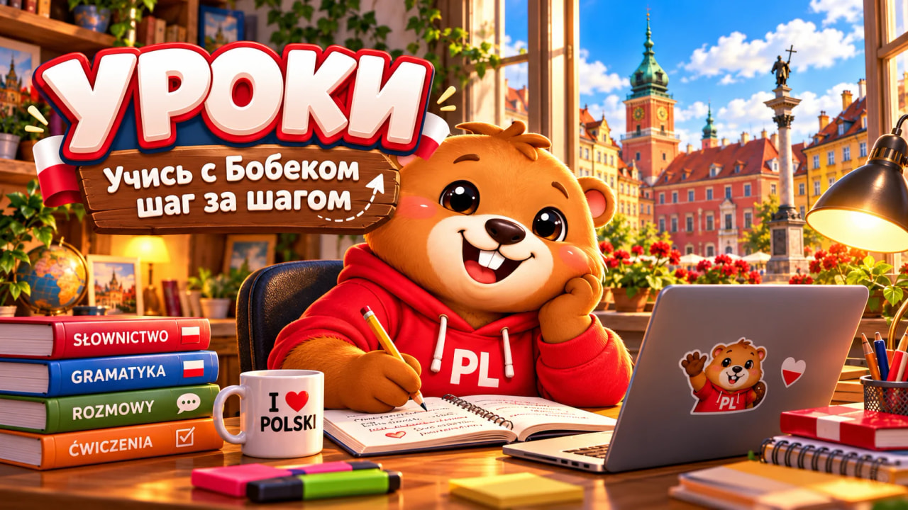
1280×720 · полосы 0/0 px · края 84%/154% · детали 0.48 · без мыльных полос
/start (вернулся) (ru)
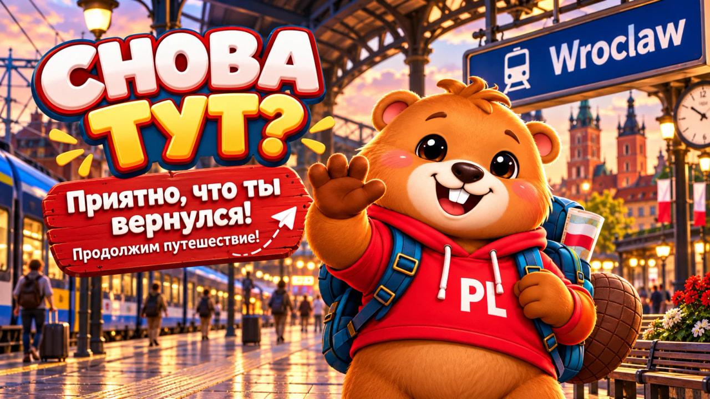
1280×720 · полосы 0/0 px · края 73%/78% · детали 0.50 · без мыльных полос
/settings (ru)
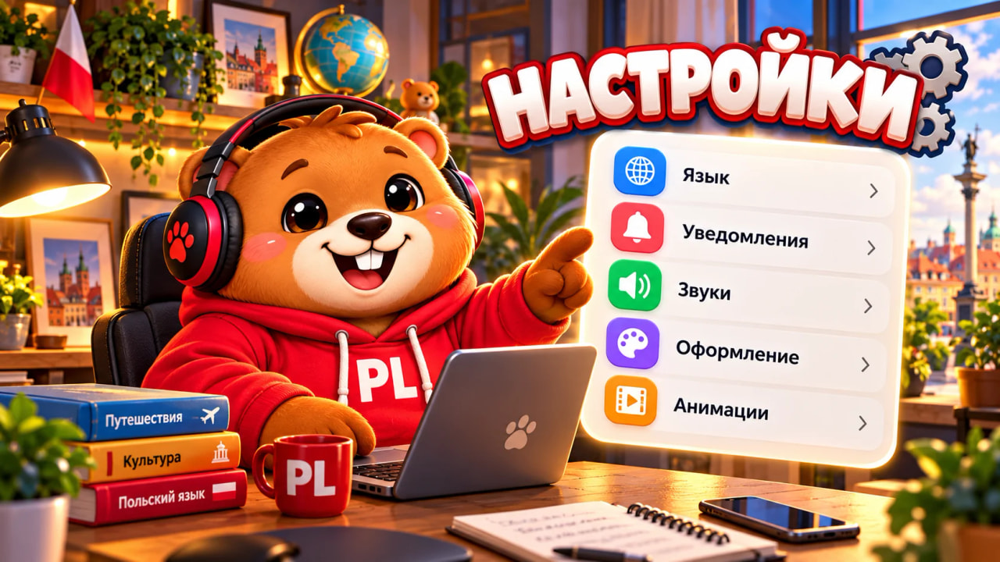
1280×720 · полосы 0/0 px · края 146%/110% · детали 0.52 · без мыльных полос
/quiz shopping (ru) · /quiz shop-loyalty (ru)
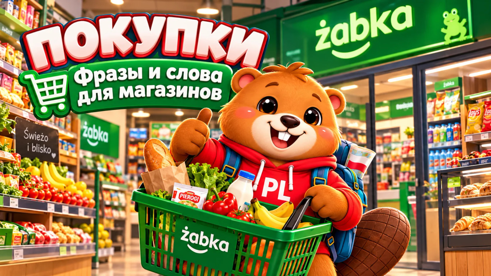
1280×720 · полосы 0/0 px · края 219%/126% · детали 0.53 · без мыльных полос
/start (ru)
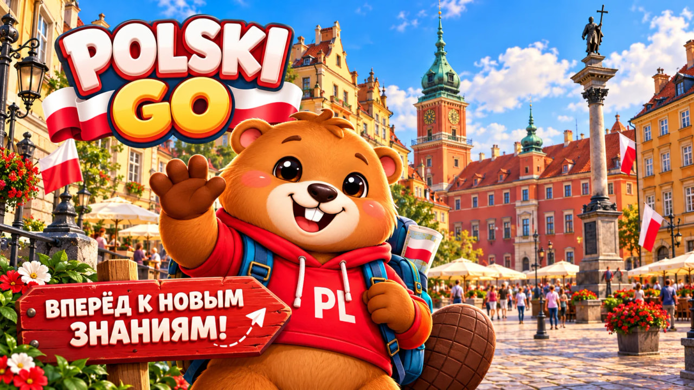
1280×720 · полосы 0/0 px · края 149%/109% · детали 0.47 · без мыльных полос
/quiz transport (ru)
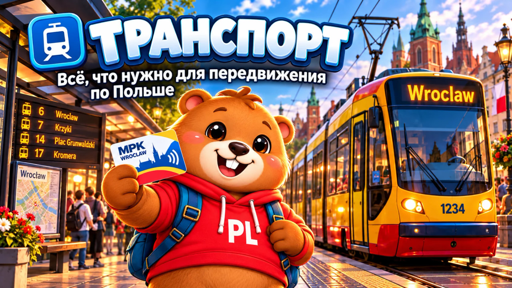
1280×720 · полосы 0/0 px · края 98%/77% · детали 0.50 · без мыльных полос
/words (ru)
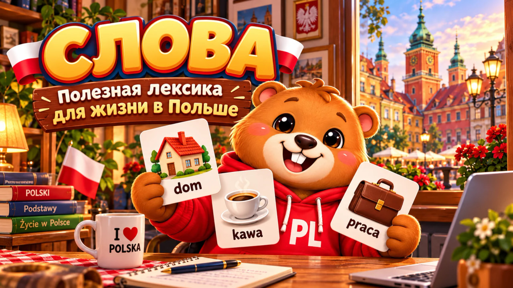